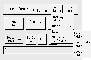

sOVERVIEW
Welcome to IVE
(Interactive Visualization Environment). IVE is a software package
designed to interactively display and analyze gridded data. IVE
assumes the data to be displayed are contained in one-, two-,
three- or four-dimensional arrays. By default, the numbers within
these arrays are assumed to represent grid point values of some
field variable (such as pressure) on a rectangular evenly spaced
grid. IVE is, nevertheless, capable of displaying data on arbitrary
curvilinear grids.
If the data points are not evenly spaced on a rectangular grid,
IVE must be informed of the grid structure, either by specifying
"attributes" in the data input or by specifying the coordinate
transform in a user supplied subroutine. Staggered meshes and
stretched rectangular grids (which occur when the stretching along
a given coordinate is a function only of the value of that
coordinate) can be accomodated by specifying "attributes" and
one-dimensional arrays containing the coordinate locations as part
of the IVE input data. More complicated mesh geometries must be
communicated to IVE via user supplied "transforms" that define the
mapping between physical space and the array indices.
Since four-dimensional data cannot be directly displayed on a
flat computer screen, it is necessary to reduced the dimensionality
of the data before it is displayed. One of IVE's primary
capabilities involves dimension reduction or "data slicing." IVE
allows the user to display lower-dimensional subsets of the data by
fixing a coordinate or by averaging over the coordinate.
IVE currently has the capability to display
- scalar fields as
- 2D-contour plots
- 1D-line plots
- a vertical sounding
- a single point value
- vector fields as 2D vector plots
- trajectories in a 2D flow
- trajectories in a 3D flow that are projected onto a plane
parallel to one of the cooridinate axes
IVE lets you overlay plots, loop plots, and control a wide
variety of display parameters.
IVE also can perform algebraic computations on the gridded data
and can calculate derivatives. More complicated computations can be
preformed in user supplied subroutines.
When you begin IVE its
two most important windows will appear: the IVE WINDOW, and the
graphic display window. The IVE WINDOW will appear in the upper
left-hand corner of your screen, as seen below:
And the graphic display
window is presented in the upper right-hand corner of your screen.
It is initially used as IVE's title page.
Most of IVE's commands
are initiated from the IVE WINDOW. The IVE WINDOW is used to input
data sets, output data, plot data, create loops, and controls
several esthetic aspects, such as: color tables and line types.
Each feature of the IVE WINDOW will be discussed in detail.
The graphic display
window is where data is graphically depicted.
The second most
important control window is the WINDOW/SLICER window, which will
appear in the lower left-hand corner of your screen, after you
have loaded your data. As seen below:
The WINDOW/SLICER
window is used to select the portion of your data-set that you wish
to graphically depict. IVE plots portions of a four-dimensional
data set which represents points, lines, or surfaces. (The ability
to plot three-dimensional volumes will soon be added to IVE). Each
feature of the WINDOW/SLICER window is discussed in the section
titled `WINDOW/SLICER'.
The third most
important control window is the PROPERTIES window:
The content of the
PROPERTIES window will vary, depending on the dimensions of the
data specified in the WINDOW/SLICER window. The PROPERTIES window
appears automatically, below the IVE WINDOW, after the
WINDOW/SLICER settings have reduced the original data set to a line
or a surface of data. Each feature of the PROPERTIES window is
discussed in the section titled `PROPERTIES'.
sCONVENTIONS
When you use IVE there are
"conventions" that hold true throughout the IVE widgets. This
section is to familiarize you with the two or three different ways
to perform an operation. The widgets are set up this way so that
you may choose the mode of execution most convenient to you.
LOADING A FILE OR
DIRECTORY:
After you have highlighted
a FILE or DIRECTORY there are three ways to load your information:
1) You can double click the FILE or DIRECTORY with your left-hand
mouse button. 2) You can strike the RETURN key on your keyboard. 3)
You can single click on the box that is highlighted in reverse
video.
CLEARING AND TYPING IN
A BOX:
Whenever you wish to type
numbers and/or characters within a command box there are three
"conventions" that will hold true throughout IVE: 1) In order to
activate your keyboard within the box, you must move your mouse
cursor into the box. 2) If there are already numbers or characters
written within the box you are able to clear the box by holding
down the CONTROL key and striking A; this brings your cursor to the
head of the box. Then, to clear the box, hold down the CONTROL key
and hit K. The box is now free and clear and ready for you to enter
your next set of numbers or characters.
There are three ways to
adjust the settings of SLIDER BARS: 1) You can hold down your
left-hand mouse button on the SLIDER BAR and drag it to the desired
setting. 2) You can click your left-hand mouse button just above
the SLIDER BAR; opening a small window in which to type your
setting. 3) You can click your left-hand mouse button on either
side of the SLIDER BAR; with each click the BAR will move
incrementally in the direction of your cursor.
sTHE IVE WINDOW: MAIN
MENU:
Click on the word: INPUT,
in the upper left-hand corner of the IVE WINDOW, and a submenu will
appear:
LOADING A TRANSFORM
FILE
If the coordinate surfaces
of your data are curved, you must first supply IVE with a TRANSFORM
FILE. Transforms map your curvilinear coordinates to a rectangular
Cartesian grid. You have the option to set up a .cshrc file, which
automatically loads your transforms, but if you have not, you can
load your transform file via IVE.
After you have brought
up the INPUT submenu, click the left-hand mouse button on the line
that reads: LOAD TRANSFORM. The TRANSFORMS window will appear, and
your default transforms are automatically displayed, in the
right-hand box labeled FILES.
To select a transform
file, click on it with your left-hand mouse button; this highlights
the file in reverse video and tells you that you have selected the
file. To load the file you can double click on the file with your
left-hand mouse button, click on the box labeled OK, or strike the
RETURN key on your keyboard; all three operations will load your
file. After your computer has loaded the file, click on the box
that reads DONE. The TRANSFORMS window disappears.
LOADING A TRANSFORM
VIA THE COMMAND LINE BOX:
You can also load a
transforms file via the COMMAND LINE box. Place your mouse cursor
in the COMMAND LINE box, this activates your keyboard within the
box. Clear the box (by holding down the CONTROL key and striking
A and then K), type your desired path name, and hit
the RETURN key.
The following is an
example of transforms path name:
To load a DATA FILE, click
your left-hand mouse button on the word INPUT at the top of the IVE
WINDOW. A submenu will appear.
Next, click on the line
that reads LOAD DATA FILE. The FILES window appears, the data files
in your directory are shown in the right-hand box labeled FILES and
the subdirectories are shown in the left-hand box labeled
DIRECTORIES.
To select a data file,
click on the file in the right-hand box with your left-hand mouse
button (highlighting it in reverse video). Then strike the RETURN
key, or click on the OK button with your left-hand mouse button, or
double click on the file with your left-hand mouse button. To
obtain a file from a subdirectory click on the directory with your
left-hand mouse button from which you have selected your file from:
the selected directory will appear in reverse video. Then either
double left-hand mouse button, click on the box that reads FILTER,
or strike the RETURN key. This pulls up the files under your
selected directory. Then follow the directions for selecting a file
from the right-hand box. After the computer has loaded the file,
click on the box that reads DONE, which removes the FILES window,
so that you can once again access IVE's main menu.
LOADING A DATA FILE
VIA THE COMMAND LINE BOX:
Another option to load a
data file is to use the COMMAND LINE box, located just above the
DIRECTORIES and FILE boxes:
To use the COMMAND
LINE box, slide your mouse cursor into the box, this activates your
keyboard within the COMMAND LINE box. Next, clear the box by
holding down the CONTROL key and striking A and then
K. Then enter your desired path name and hit the RETURN
key.
The above is an
example of a pathway name:
In the IVE WINDOW click
your left-hand mouse button on the word INPUT., the INPUT submenu
will appear.
Click on the bottom
line that reads: INPUT COMMANDS. INPUT COMMANDS will either load
the last file you worked with, or, if you have not yet worked with
a file, it will bring up your home directory. INPUT COMMANDS also
allows you to load files, by way of the COMMAND LINE box.
sOUTPUT:
Click your left-hand
mouse button on the word: OUTPUT, a submenu will appear:
Next, click on the
line that reads: PRINT, the PRINT MENU appears:
Hold down your
left-hand mouse button on the perforated line at the top of the
menu. Then drag the PRINT MENU wherever you choose on your screen
and release the mouse button to place.
Click your left-hand
mouse button on PRINT CURRENT, and IVE will print the data
currently shown in the graphic display window.
Click on the line that
reads: PRINT SETUP, and a work window appears:
Click on the line that
reads: PRINTER NAME. PRINTER NAME allows you to choose the specific
printer that you want to send your information to. You can perform
this function two ways: First, you will be presented with a list of
the printers that are available to you. To choose one click on it
with your left-hand mouse button, which will highlight the desired
printer in reverse video, and strike the RETURN key. The second way
to enter the printer's name is via the command line box in the IVE
window. Place the mouse cursor in the command line box, which
activates it, and type: PRINTER_NAME=(and the actual name of the
printer).
COLOR LINES:
Click your left-hand
mouse button on the line that reads: COLOR LINES, and you can
choose YES or NO. YES tells the printer that you want to print
color lines. NO lets the printer know that you want the lines in
your data to show up as black. NO is the default setting and unless
you specify that you want color lines the printer will assume that
the lines in your data are black; regardless of how your data is
displayed in the graphics display window.
You can also select
the COLOR LINES setting via the command line box. To do this, place
your mouse cursor in the command line box and type: PRINT_COLOR=ON
or OFF.
NUMBER OF IMAGES TO
BE PRINTED ON A SINGLE PAGE:
Click on one of the icons
that shows 2, 4, or 6 page setup, and a window will appear
depicting the number of images you have requested. The following is
an example of 4 images on a single page.
Above each image you
can numerically decide the order of the images on the page. Place
your mouse cursor in the small box above each image, activating
your keyboard within the box, type the desired number, and strike
the RETURN key. This numerically decides the order of your images
on the printed page. There are two ways to number your images. Each
image that you build is kept in numerical secession in the CONSOL
WINDOW, behind all the IVE graphics. You can either enter the
number that is assigned to each image, or you can enter -1 for the
last image that you have worked with. Type C in the box and the box
will read: CURRENT, this is the image that is presently displayed
in the graphics display window.
EPS (Encapsulated
Postscript File):
Click on the word that
reads: OUTPUT, and a submenu comes up.
Now, click on the line
that reads: EPS. To enter the name of your EPS file, place your
mouse cursor in the COMMAND LINE box and type: WRITEFRAME=(then
your file name). Then strike your RETURN key. Example:
WRITEFRAME=FRED
Click on the line OUTPUT,
in the IVE WINDOW, a submenu appears. Now click on the line that
reads: DUMP WINDOW; and a window will appear:
Click on the box labeled:
TYPE and you can flip between two options: GIF and XWD (X Window
Dump File). Click on the TYPE box until you have selected the
desired file format. Then place your mouse cursor in the COMMAND
LINE box, type the name of the file, and strike the RETURN key.
Next, the WHAT box gives
you two more choices: PLOT or LOOP. The WHAT box asks you if you
want create a file of a loop or a plot. Click on the WHAT box to
choose LOOP or PLOT.
If your file contains
a loop, you can number each frame within the loop. To do this,
enter your file name in the COMMAND LINE box followed by ##.
Example:
This will label each
frame within the loop as: FRED01, FRED02, FRED03, and so on.
To access LOG FILE, click
on IVE's OUTPUT command; this brings up a submenu.
Click on the line that
reads: LOG FILE, this allows you to change the log file name. IVE's
default file name is IVE LOG.
sBUILD LOOP:
Once you have loaded your
data as a plot, you can build a loop with IVE. A loop is a series
of frames, each slightly different than the next. The level at
which each frame differs from another is determined by you--within
parameters of your data. Once you have created a loop you are able
to either toggle through the loop frame by frame with the STEP
arrows, or RUN it as a movie with varying speeds and directions.
TO LOAD A LOOP:
To load a loop, click on
the box that reads: BUILD LOOP, in the IVE main menu. A window will
appear labeled: LOOP SETUP:
sLOOP SETUP:
The small diamond icon,
in the upper right-hand corner of the window, represents your fixed
coordinate(s), as selected in the WINDOW/SLICER window. To choose
one, click on it with your left-hand mouse button.
You are now presented
with three command line boxes: START VALUE, INCREMENT, and END
VALUE. START VALUE lets you decide, numerically, the start point of
your loop within your fixed coordinate (displayed below in the
WINDOW/SLICER widget).
END VALUE:
END VALUE allows you to
choose the end point of your loop, within the parameters of your
coordinate (as viewed in the WINDOW/SLICER widget).
The INCREMENT box
determines how the coordinate is broken up to produce each frame
within your loop. For example, if you set START VALUE at 100, and
END VALUE at 1000, and you type 100 in the INCREMENT box, your loop
will consist of 10 frames. You have told IVE, through the INCREMENT
box, to create one frame for every 100 increments.
After you have
numerically set START VALUE, END VALUE, and INCREMENT, click on the
small box in the upper left-hand corner of the LOOP SETUP window
that reads: GO. You will have to wait while IVE loads the loop.
sLOOP CONTROL
WINDOW:
Once the loop is loaded a
new window comes up, titled: LOOP CONTROL:
The LOOP CONTROL
window has three slider bars: LOOP DELAY, BEGINNING PAUSE, and END
PAUSE.
LOOP DELAY establishes
how long each frame is held on the screen while the loop runs, in
milliseconds.
BEGINNING PAUSE is the
length of time (in milliseconds) that the first frame of your loop
will hold on the screen before the loop runs.
END PAUSE:
END PAUSE is the
length of time that the last frame of the loop is held on the
screen before the loop repeats itself, also in milliseconds.
QUIT gets you out of the
LOOP CONTROL window.
There are two STEP
controls; to toggle through your loop; either forwards or
backwards. Click, with your left-hand mouse button, on the arrow
that points in the left direction, and you will toggle through your
loop frame by frame in a backwards direction. Now, click on the
STEP arrow that points to the right and you will STEP through your
loop in a forward direction.
Click on the DIRECTION
box to change the running direction of the loop, either FORWARD or
BACKWARDS.
RUN, runs the loop in
which ever direction the DIRECTION box reads. To slow the running
time of the loop, increase the setting in the LOOP DELAY box. This
increases the time that each frame is held on the screen.
DUMP allows you to create
a file of your loop or plot. Click on the small box icon that
reads: DUMP and you are presented with a window that looks like
this:
TYPE allows you to choose
whether your file is going to be a GIF file or an XWD file. Choose
one by clicking on the TYPE box.
WHAT determines if your
file will contain a loop or a plot. Click on the WHAT box to choose
the option you want.
sDETERMINING A
FIELD:
After you have loaded
your data, a series of diamond icons appear at the bottom of the
IVE WINDOW--these represent your FIELDS:
When you created your
data set you established a symbolic meaning for each FIELD within
your data set; P for pressure, and so on. IVE can accommodate up to
99 different FIELDS.
To select a FIELD
click the left-hand mouse button on the small diamond that you wish
to activate. The program will ask you to wait until it is done. You
have now selected a FIELD from your data set. You also have the
option selecting more than one. IVE will hold the previously
selected FIELD in memory.
s"WINDOW/SLICER":
SETTING COORDINATE VALUES
Once you have chosen a
FIELD you will want to move to the WINDOW/SLICER at the bottom of
your screen:
Each slider bar
represents a single coordinate. The slider bars have two functions:
they allow you to fix a coordinate value, and they enable you to
select values for each of the coordinates.
First, you must FIX at
least one of the coordinate values. It is necessary to FIX at least
one coordinate because a plot is a two-dimensional representation
of a three or four-dimensional field. Example, if you created your
data in three plans: X, Y, and Z, and you FIX the Z-plan at a
setting of 3; you will get a picture of your X and Y plans as a
slice at Z = 3.
To FIX a value, click
your left-hand mouse cursor on the box that lies at the end of each
slider bar. Before you click on the box it will read FREE, click
once and it will read FIXED, click a second time and the box will
say AVERAGE (this averages the numerical values of the coordinate
to give you a single point), click on it once more and you will be
back at the FREE setting. Once you have fixed the desired
coordinate, or coordinates--because you can FIX more than
one--select values for each of your coordinates.
To select values,
place your mouse cursor on the slider bar, hold down the left-hand
mouse button, and drag it until you have your desired value. As you
slide the bar, the coordinate value is displayed numerically above
it. You can also select values via your keyboard. To do this, place
the mouse cursor above the slider bar and click the left-hand
button. This will open a small window in which you can type in the
desired value. This is helpful to select a precise point within a
coordinate with a large value.
sPROPERTIES:
When you fixed a
coordinate (i.e., X, Y, or Z) a window showed up labeled
PROPERTIES:
The objects in the
PROPERTIES window are:
INTERVALS:
You are given the
choice of INTERVALS or VALUES. INTERVALS is IVE's default setting.
If you wish to utilize the INTERVALS setting, click on the small
diamond icon that reads: INTERVALS. Next, place your mouse cursor
in the command line box, type your desired intervals in the box,
and strike the RETURN key.
VALUES:
If you wish to only
plot a single contour line, or several specific values (for
example, at logarithmic intervals), choose the VALUES setting by
clicking on it. Next, move your mouse cursor into the command line
box, this
activates your
keyboard in the box, type in your desired values (e.g., 1, 2, 5,
10, and so on), and hit the RETURN key.
LABEL EVERY is a slider
bar that enables you to determine the number of lines you want
labeled. For example, if you want every 5th line to be labeled,
place the mouse cursor on the slider bar, hold down the left-hand
button, and drag the bar until it reads "5".
FILL CONTOURS:
If the FILL CONTOURS
setting reads NO, your data will be displayed as a series of
contour lines. If the FILL CONTOURS setting reads YES, the area
between each pair of contour lines is filled by colors specified in
the default color table (colors can be changed with the menu
labeled COLOR TABLE in IVE's main window. Custom color tables can
also be created. See CUSTOM COLOR TABLES for instruction).
PLOT ZERO
CONTOUR:
IVE automatically will
put a contour line at the 0 reading on your displayed data. If you
do not want a contour line to appear at the 0 mark, set the PLOT
ZERO CONTOUR on NO. And conversely, if do want a contour
line to appear at the 0 mark click on YES.
You are presented with
two choices for plotting your horizontal axis: LINEAR and
LOGARITHMIC. The two choices allow you to choose whether you want
to plot your data in a linear fashion, or logarithmically. To
select one, click the left-hand mouse button on the small diamond
icon that you desire.
MAJOR TIC INTERVAL
and MINOR TIC INTERVALS determine how you calibrate your plot. (You
must remember to keep your TIC INTERVALS within the parameters of
the MAX. COORDS/WINDOWS. If you don't, IVE will not allow you to
plot).
The MAJOR TIC INTERVAL
box determines the number of larger markings (MAJOR TIC INTERVALS
are labeled). To set the number of MAJOR TIC INTERVALS, place the
mouse cursor in the box, this activates your keyboard within the
box, type the desired number, and hit the RETURN key on your
keyboard. If you wish to clear the box to type another setting,
hold down the CONTROL key and strike K.
Next, do the same in
the MINOR TIC INTERVAL box, to determine the number of smaller
markings between each MAJOR TIC INTERVAL. MINOR TIC INTERVALS are
not numerically labeled.
The VERTICAL AXIS is set
up, and is activated, in exactly the same manner as the HORIZONTAL
AXIS (MAJOR and MINOR TIC INTERVALS). The only difference is that
it controls the vertical axis.
sPLOTTING DATA:
After you have loaded
your data and are ready to plot it, click your left-hand mouse
button in the box that reads NEW PLOT. Your data will be depicted
in the graphic display window, in the upper right-hand corner of
your screen.
IVE is equipped with a
feature to superimpose, or "overlay", one plot on top of another.
For example, if you want to see a vector plot superimposed on top
of your already existing scalar plot. You would go to the IVE
WINDOW, click your left-hand mouse button on SCALAR PLOT, select
VECTOR PLOT, determine its settings, and click on the box that
reads OVERLAY PLOT. Now you have your original scalar plot
superimposed by a vector plot to give it direction.
LIFT OVERLAY:
LIFT OVERLAY enables you
to lift OVERLAYS in the order that they were put down. Click the
left-hand mouse button in the box that reads LIFT OVERLAY and it
peels away the last graph that you laid down.
sPLOTTING A
VECTOR:
To plot a vector, click
your left-hand mouse button on the box that reads SCALAR PLOT, in
the IVE WINDOW. A submenu will appear.
Now click on the line
that reads VECTOR PLOT; the PROPERTIES window will appear on your
screen:
The PROPERTIES window
allows you adjust vector variables. The window is divided into
three sections: VECTOR, HORIZONTAL AXIS, and VERTICAL AXIS.
First, you will presented
with two options: VECTORS and STREAMLINES. VECTORS is to plot a
vector (this is the default setting), and STREAMLINES allows you to
plot a partial vector, and then IVE will project the course of your
vector--barring any changes.
HORIZONTAL AND
VERTICAL COMPONENTS:
This is where you enter
the FIELDS that you have selected. To do this, place your mouse
cursor in the box in which you wish to type, enter the appropriate
FIELD, and strike your RETURN key. Do the same in the next
box.*****
SCALE FACTOR:
Next, is a box labeled
SCALE FACTOR. The SCALE FACTOR default setting is 1. SCALE FACTOR
determines the length of your vectors. Example, if you want your
vector to be twice as long, bring the mouse cursor into the SCALE
FACTOR box and type in the number "2". And, conversely, if you want
it to be half as long type ".5".
sHORIZONTAL AXIS:
LINEAR OR
LOGARITHMIC:
In the second part of the
PROPERTIES window you have the choice of plotting your vector in a
linear fashion or logarithmically--simply click the right-hand
mouse button on the desired setting.
MAJOR AND MINOR TIC
INTERVALS:
The two boxes titled
MAJOR TIC INTERVAL and MINOR TIC INTERVAL determine the calibration
of your plot. MAJOR TIC INTERVALS determines the number of larger
markings (MAJOR TIC INTERVALS are labeled). To set the number of
MAJOR TIC INTERVALS, place your mouse cursor in the box, this
activates your keyboard within the box, type the desired number,
and hit the RETURN key on your keyboard. Next, do the same in the
MINOR TIC INTERVAL box--to determine on how many smaller markings
you want to lie between each MAJOR TIC INTERVAL.
sPLOT
BACKGROUNDS:
In the IVE window click
on the box that reads: PLOT BACKGROUNDS, a submenu will appear:
PICTURE:
BASE MAP:
Now, click on the line
that reads: BASE MAP, a MAP OPTIONS window will unfold:
Click on the box that
reads: LABEL PLOT to determine if you want your plot labeled. The
default setting is YES. This box refers to the outside labeling on
your plot, and not to the labeling of the major tic marks.
Click on the box under
the heading of DRAW MAP, either YES or NO. Only use the setting of
YES if your data is globally oriented. This box asks you if you
want display your data on a world map.
Click on the box that
reads: CONTINENTAL OUTLINES to toggle back and forth between YES
and NO. This box determines whether you want the continents to be
displayed on your global plot.
POLE LATITUDE:
The POLE LATITUDE box
allows you type in the angle (in degrees) of where on the earth's
surface your data will be displayed from--latitudinally. To do this
place your mouse cursor in the box, this activates the keyboard
within the box, type in the number of degrees that you desire, and
strike the RETURN key.
POLE LONGITUDE:
The POLE LONGITUDE box
allows you to type in the number of degrees that you want your data
displayed from. To use the box, place the mouse cursor in the box,
type in your desired number of degrees, and strike the RETURN key.
The ROTATIONAL ANGLE box
allows you to adjust for the satellite's angle when the data was
taken. For example, if you want to display your data from directly
over the North Pole, but the satellite was 15 degrees off of the
pole when the data was gathered, place your mouse cursor in the
ROTATIONAL ANGLE box, type in "15", strike the RETURN key. You have
adjusted for the angle of the satellite relative to the pole.
GRID LINE
SPACING:
This box allows you to
determine the number of grid line spacing on your map. The default
setting is 10.00, which means that every 10 degrees a grid line
will appear on your map. To change the setting, place your mouse
cursor in the box, type in the number that you wish, and strike the
RETURN key.
MAP PROJECTION:
The MAP PROJECTION box
indicates the type of map that your data will be displayed on,
MERCATOR is the default setting. Click on the small rectangular box
at the end of this box and a list of map options will appear:
Click on one of the
map options to select it. (For more information on the different
types of maps please refer to your NCAR graphics manual).
Nothing has been written
under this heading in IVE.
Nothing has yet been
written under this heading in IVE.
COLOR TABLE
Click on COLOR TABLE,
in IVE's main menu, and a submenu will appear:
PICTURE:
DISPLAY
TABLE:
Click on DISPLAY
TABLE, and the COLOR BAR window will appear at the bottom of your
screen. The COLOR BAR window displays IVE's default color table and
allows you see changes that you make to the color table.
SLIDE LOCK &
TOGGLE:
SLIDE LOCK & TOGGLE
controls background settings, and allows you to manipulate the
default color table (displayed in the COLOR BAR) via the COLOR
OPTIONS window. Click on SLIDE LOCK & TOGGLE and the COLOR
OPTIONS window appears:
At the top of the COLOR
OPTIONS window you will see SLIDE COLOR TABLE accompanied by two
toggle switches: forward or backwards. SLIDE COLOR TABLE allows you
to shift IVE's default color table either forwards and back. Click
on the right-hand arrow and you advance the color table a single
numeric step, you will see the change displayed in the COLOR BAR.
Click the left-hand toggle switch, and you will move the color
table a single step in a backwards fashion (the change is also
reflected in the COLOR BAR window). To instate the changes that you
have with the toggle switch you must click with your left-hand
mouse button on the box that reads: APPLY.
Note: The "sliding" of
the color table does not actually change the color table, but
rather, shifts the position of colors within the table. To create a
custom color table see the section titled: MIXER.
LOCK COLOR
TABLE:
From the COLOR OPTIONS
window you can LOCK [the] COLOR TABLE. LOCK COLOR TABLE allows you
to either lock IVE's color table, or lock in the shifts that you
made when you toggled through IVE's color table with SLIDE COLOR
TABLE. To lock the color table, click on the box that lies at the
end of LOCK COLOR TABLE. The box will initially read: FREE, but
click on the box and it will read: LOCKED. You have now locked in
your chosen color table, and can use it when creating future plots
or loops within you present IVE secession.
To permanently record
your color table for later use, you can create a file in which to
store it. To make a file of your color table, place your mouse
cursor in the COMMAND LINE box, activating your keyboard within the
box, type: WRITECOLORTABLE=(and then the file name that you
desire), and strike the RETURN key.
Click on the box that
reads: RESET, and the command will bring you back to IVE's default
color table, even if you have LOCKED the color table.
The TOGGLE BACKGROUND
command allows you to change the background of your plot or loop
from white to black; video to reverse video. IVE initially displays
your plot with a white background, but click on TOGGLE BACKGROUND
and your background will change to reverse video; a black
background.
Click on the line that
reads: COLOR BAR, and IVE's color table appears at the bottom of
your screen. COLOR BAR serves the same function as DISPLAY TABLE.
Click on the line that
reads: MIXER, on IVE's COLOR TABLE menu, and the following submenu
will drop down:
RGB and HSL are two
different formats for accomplishing a change in color tables. The
two formats have been written into IVE for your convenience; use
the one that you are most comfortable with.
MIXER RGB (Red,
Green, Blue):
Click on MIXER RGB, and
four slider bars will appear, depicting RED, GREEN, BLUE, and COLOR
TABLE
The first three
sliders allow you to change the RED, GREEN, and BLUE settings in
the color table. COLOR TABLE ENTRY gives you control of RED, GREEN
and BLUE in a single slider.
RGB (Red, Green, and
Blue):
To change a single color,
hold down your left-hand mouse button on the slider bar and drag it
to you desired setting. You will see the numerical change above the
slider bar as you slide it. You are also able to change the setting
by clicking your left-hand mouse button above the slider bar
(opening a small window to type in), type the number that you want,
and hit the RETURN key on you keyboard.
COLOR TABLE
ENTRY:
The COLOR TABLE ENTRY
slider controls the RED, GREEN, and BLUE settings from a single
slider. Above the COLOR TABLE ENTRY slider bar you will see a
number that corresponds with a number on the COLOR BAR color table;
as a combination of RED, GREEN, and BLUE. To change the color
setting, hold down your left-hand mouse cursor on the slider bar
and drag it to you desired setting: the number displayed above the
COLOR TABLE ENTRY slider will change, and so will the RED, GREEN,
and BLUE sliders. Another way to change the setting on the COLOR
TABLE ENTRY slider is to click your left-hand mouse button just
above the slider (opening a small window to type in), type the
number that you wish, and hit your RETURN key.
You will also notice a
small screen at the top of the MIXER RGB window. The left-hand side
of the window displays the color that you began with, and the
right-hand side shows the changes you make as you move the COLOR
TABLE ENTRY slider.
SAVING A CUSTOM COLOR
TABLE AS A FILE:
You have just created a
custom color table. To save your newly created color table, move
you mouse cursor into the COMMAND LINE box, activating your
keyboard in the box, type: WRITECOLORTABLE=(and the name that you
wish call your file), and strike the RETURN key on your keyboard.
MIXER HSV (Hue,
Saturation, Value):
Click on MIXER HSV, and
four slider bars appear:
HUE, SATURATION and
VALUE control the components of your color table, and COLOR TABLE
ENTRY is a control slider that manipulates the other three
components to give an overall color. When you change COLOR TABLE
ENTRY you are able to view the change in the small screen at the
top of the MIXER window. The left-hand side of the screen shows the
color that you started with, and right-hand side shows your
change.
To change a slider,
hold down your left-hand mouse button on the slider bar and drag it
to your desired setting. As you drag the slider bar you will notice
that its numeric setting will change as you drag it. You can also
change the setting by clicking above the slider bar, opening a
small window to type in, type your wanted number, and strike the
RETURN key.
INSERT adds a single
block of the same color to your color table. The color you add
corresponds to the numeric setting of COLOR TABLE ENTRY, and the
small screen at the top of the MIXER window. Click on INSERT and
the color from the right-hand side of the screen (also the numeric
setting of COLOR TABLE ENTRY) is inserted into the color table, in
the COLOR BAR window.
Click on DELETE and you
will subtract the color depicted on the small color screen in the
MIXER window. When you execute the DELETE command, the change is
directly reflected in the COLOR BAR window, at the number that
corresponds to the COLOR TABLE ENTRY setting.
After you have made your
changes in the MIXER window, click on the box that reads: APPLY,
you will have entered the changes that you have made.
SAVING YOUR CUSTOM
COLOR TABLE AS A FILE:
To save your custom color
table, move you cursor into the COMMAND LINE box, activating your
keyboard within the box, type WRITECOLORTABLE=(and the name that
you wish to call your file), and strike the RETURN key. The
following is an example of what you might type in the COMMAND LINE
box: WRITECOLORTABLE=FRED.
DONE quits you from the
MIXER window after you have made your changes.
Click on READ, and a
submenu will drop:

Click on DEFAULT TABLE
and IVE returns you its default color table.
GREY SCALE switches the
color table from color to grey scale. (At present time it takes two
passes of this command to complete it).
Click on the CUSTOM
TABLE, and IVE brings up the FILES and DIRECTORIES window:
IVE brings up this
window because this is where your custom color tables are stored as
files. To access a file with a custom color table, click on the
file that you wish to bring with your left-hand mouse button
(highlighting the file in reverse video). Then, strike the RETURN
key, or double click with your left-hand mouse button, or click on
the box that reads: OK; all three command serve the same function.
You have now entered your CUSTOM TABLE. To escape from the FILES
and DIRECTORIES window, click on the box that reads: DONE.
Another way that you
can bring up a CUSTOM TABLE is to enter your file name in the
COMMAND LINE box. To do this, place your mouse cursor in the
COMMAND LINE box (activating your keyboard within the box), type
your desired file name, and hit RETURN. After you have completed
the command click the box that reads: DONE, to escape from the
FILES and DIRECTORIES window.
After you have entered
your CUSTOM TABLE file you can view it by clicking on the line that
reads: DISPLAY TABLE, in the COLOR TABLE menu. The next time you
perform the NEW PLOT command the CUSTOM TABLE that you have entered
will be utilized by IVE.
sCUSTOM LINES
Click on CUSTOM LINES, in
IVE's main menu, and a submenu will drop:
Click on the line that
reads: COLOR, and another submenu will fall:
BOTH enables you to
change the colors of both positive and negative lines. To change
the colors within BOTH, click on BOTH and an eight color submenu
will appear.
To select a color,
click on the color that you want your lines to be. To view the
change that you have just made, click on either NEW PLOT or OVERLAY
PLOT and your newly colored lines will be displayed.
POS refers to the
coloration of positive lines within your plot or loop. Click on POS
and an eight color submenu will drop.
To select a color for
your positive lines, click on the color that you desire. To see the
change, click on either NEW PLOT or OVERLAY PLOT and your plot will
be drawn with your newly colored lines.
NEG refers to the
coloration of the negative lines in your plot or loop. Click on NEG
and an eight color submenu will appear.
To change the color of
your negative lines click on your desired color. Then click on NEW
PLOT or OVERLAY PLOT to view the changes that you have made.
DEFAULT gives you IVE's
default color lines. You can, at any time, use the DEFAULT command
to change the color of your lines back to the default setting.
Click on PATTERN and the
following submenu will appear:
BOTH refers to both
positive and negative lines. Click on the line that reads BOTH and
a submenu appears.
To change your lines
to SOLID, DASH, DOT, or DASHDOT click on the your desired line
texture.
The POS command allows
you to control the texture of the positive lines in you plot or
loop. Click on the line that reads POS and a submenu will drop:
To change the texture
of your positive lines, click on the line you desire. To view your
change, click on either OVERLAY PLOT or NEW PLOT, in IVE's main
menu.
NEG allows you to change
the negative lines in your plot or loop. Click on NEG and a submenu
will appear.
To change the texture
of your negative lines, click on your desired setting. To view the
change, click on either OVERLAY PLOT or NEW PLOT.
DEFAULT allows you to
return to IVE's default setting at any time. IVE's default setting
is a thin solid line (one pixel wide).
WIDTH allows you to
control the thickness of your lines within your plot or loop. Click
on WIDTH and a three line submenu will drop down:
NORMAL is IVE's default
setting. If you use this setting your lines will be a solid line
one pixel wide.
Click on THICK and you
will change the lines in your plot form one pixel wide to two
pixels in width. After you have performed the command you can view
the change by either clicking on OVERLAY PLOT or NEW PLOT.
Click on THICKEST and
will change the lines in your plot or loop to lines that are three
pixels in width. After you have performed the command you can view
the change by either clicking on OVERLAY PLOT or NEW PLOT.
{kind=link}
{kind=link}
{kind=link}
{kind=link}
{kind=link}
{kind=link}
{kind=link}
{kind=link}
{kind=link}
{kind=link}
{kind=link}
{kind=link}
{kind=link}
{kind=link}
{kind=link}
{kind=link}
{kind=link}
{kind=link}
{kind=link}
{kind=link}
{kind=link}
{kind=link}
{kind=link}
{kind=link}
{kind=link}
{kind=link}